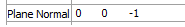
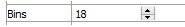
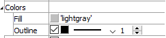
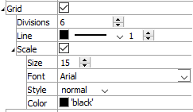
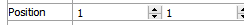
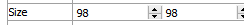

裂隙玫瑰图
说明
裂隙玫瑰图（裂隙方向的径向直方图）。
属性
显示

为各个不同的集合设置显示的关闭/开启。
显示（项目名称上的复选框）：勾选列表中的某一项可将其包含在显示中。取消勾选该项则将其隐藏。
平面法向

设置玫瑰图的方位。
平面法向：默认方位为水平，因此默认的平面法向为 0,0,1。通过此设置可以指定任意视线方向。
区间数

设置直方图中的区间数。
区间数：设置绘图中所用的角度范围——区间——的数量。每个区间的大小设为 360 除以 Bins 的值。
颜色

设置区间着色。
颜色：以下设置的容器。
填充：设置区间的着色。
轮廓：设置区间轮廓是否存在（复选框）、颜色、线样式和线宽。
网格

设置所渲染玫瑰图网格的属性。
网格：勾选时显示网格。此设置还包含以下内容。
分割数：设置网格内的分割数量。
线：设置网格线的颜色、样式和粗细。
比例：勾选时包含用于指示比例的标签。此设置还包含以下内容。
大小：设置比例标签文字的大小。
字体：设置比例标签所用的字体。
样式：设置比例标签文字的字型样式（常规、斜体、粗体、粗斜体）。
颜色：设置文本颜色。
边框

设置绘图项边框的显示。
边框：勾选时显示边框。此设置还包含以下设置。
线：设置用于渲染边框的线的粗细和颜色。
位置

设置绘图项的位置。
位置：分别指定该项左下角的下边距和左边距位置，以可用渲染区域的百分比表示。
若这些值的设置使得在当前 size 设置下该项超出可用渲染区域，则大小将自动向下调整以适应该区域。另见 size 属性。
大小

设置绘图项的大小。
大小：分别指定该项的 \(x\) 和 \(y\) 大小，以可用渲染区域的百分比表示。另见 position 属性。
透明度

设置绘图项的透明度。此设置不适用于二维模型对象。
透明度：为项目应用透明度（勾选时）。开启时，透明度设为默认值 70，并处于“锁定”状态。锁定时，可用的透明度范围被限制在 70（最低，略有透明）到 100（最高，完全不可见）。要访问完整的透明度取值范围（0-100），请按下锁形图标以“解锁”透明度范围；图标会随之改变（
）。
使用帮助按钮可获取有关此特定属性的帮助。
注意
应当提醒用户：低于 70 的值往往“更不透明”得难以察觉，并且可能导致深度透视看起来奇怪或不正确。
图例
设置该项在绘图图例中的显示。所有绘图项至少都具有 标题 属性。
图例：在图例中显示（勾选）有关该绘图项的所有信息。
标题：在图例中显示（勾选）该绘图项的标题。“别名：”字段可用于为该绘图项指定自定义标题。
大小：设置图例中文本的大小。
字体：设置文本所用的字体面。
样式：设置文本样式（选项为常规、粗体、斜体、粗斜体）。
颜色：设置文本颜色。
在 标题 下方，裂隙玫瑰图 绘图项还在图例中提供用于 平面、网格 和 区间 的控制项。各自的子属性与 标题 的子属性相同。
| 这些内容对您有帮助吗？… 版权与免责声明 | FLAC3D © 2019, Itasca | 原文更新于 2020 年 10 月 8 日 |